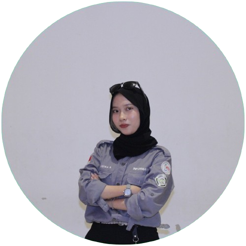

My name is
Tia Mustika Ramadhani
Saya memiliki pengalaman bekerja sebagai web developer di PT. Cipta Sukses Globalindo (CSG), di mana saya bertanggung jawab dalam pembuatan website dashboard dengan sistem manajemen hubungan pelanggan (CRM) menggunakan Laravel dan TailwindCSS. Minat dan fokus saya terletak pada backend developer.
